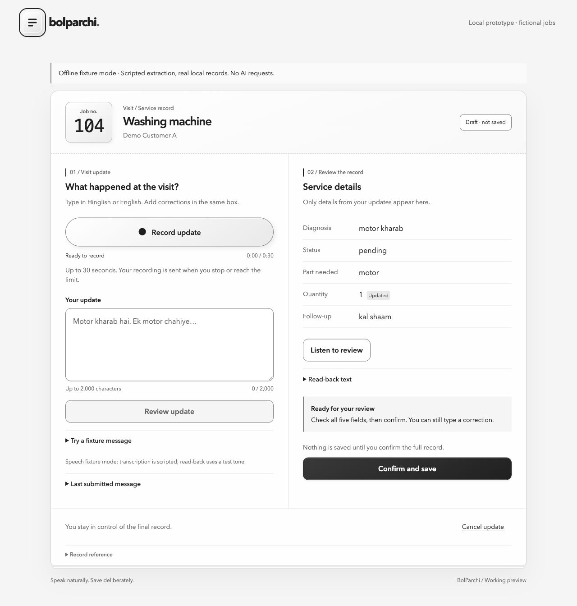
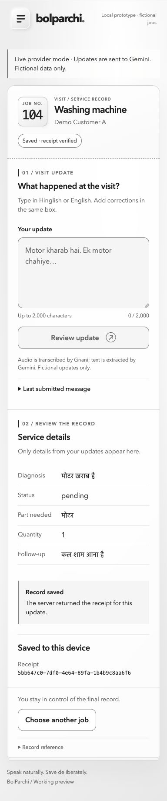

Bolo.
Record the visit in your own words. Typing is there when you need it.
Your updateMade for the repair visit
Speak in Hindi or Hinglish. Review the diagnosis, parts and follow-up. Confirm what gets saved.
Bolo. Dekho. Confirm karo.
“Do motor… sorry,
ek motor chahiye.”
Visit / Service record
Fictional repair example
Ready for your review
You review it.
You decide when to save.
For the details that matter after a visit.
Diagnosis Parts Follow-up
01 / From voice to record
“Two” and “one” aren’t the same repair record. BolParchi puts the interpreted details in front of you, so you can check them.
An illustrative Hinglish update
“Motor kharab hai.Do motor… sorry, ek motor chahiye. Kaam pending hai. Kal shaam aana hai.”
Record the visit in your own words. Typing is there when you need it.
Your updateCheck the service sheet, make a correction and answer what’s missing.
Your reviewConfirm the reviewed details. A saved receipt tells you the record is there.
Your final say02 / You stay in control
A useful assistant should make the record easier to check.
See the service sheetWhen a required detail is missing, the workflow asks for it before saving.
Review the fields on screen, or listen to Gnani’s spoken read-back. Corrections stay possible.
Only your confirmation authorizes the save. If its outcome is uncertain, check its status before editing.
03 / Inside BolParchi
The working service sheet.
One selected job. One reviewable record.

The screenshot couldn’t load. The example above describes the same five fields; you can also inspect the source below.
Recording is pending. The video will show a real update, correction, spoken review and confirmed save.
On 6 November, Ankit completed a real-provider microphone task and reported clear recording and playback. Its saved receipt and quantity-1 record were verified. This is one user, device and example.

The receipt screenshot couldn’t load. The verified task is described above.
04 / Behind the sheet
Gnani Prisma
Speech to text
Gemini
Proposed field updates
Gnani Timbre
Spoken read-back
Python + SQLite
Validation and a durable receipt
Local prototype with fictional repair jobs. Provider availability can vary. Broader technician validation is still ahead.
Speak naturally. Save deliberately.
Explore the source